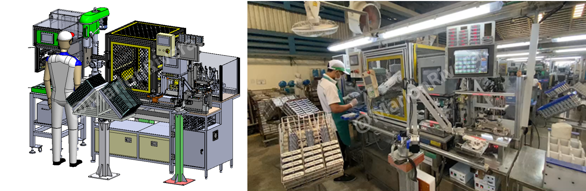

My Role
Responsibilities
Robot-cell layout, concept design, robot integration, PLC/HMI programming, servo integration and safety-system design.
Robotic Process Automation • Thailand • 2022
Robotic deburring cell combining robot motion, PLC control, servo positioning, pneumatic clamping and machine safety.

My Role
Robot-cell layout, concept design, robot integration, PLC/HMI programming, servo integration and safety-system design.
Challenge
Replace variable manual deburring with safe, accurate and repeatable robotic production.
Solution
Synchronized robot motion, fixture positioning, sensor verification, clamping and safety interlocks.
Project Impact
Project Discussion